Akashi, Hyogo: things to do, food and stays
Akashi · Hyogo
Akashi
Highlighted on the Hyogo map.
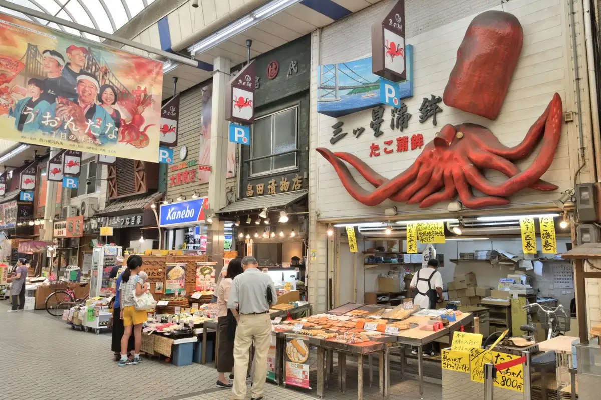
Stay
ホテルプレフォート西明石
Hotel Purefoto Nishiakashi
料亭旅館 人丸花壇
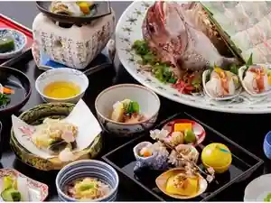
Ryotei Ryokan Hitomaro Kadan
レミントンホテル
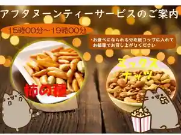
Reminton Hotel
グリーンヒルホテル明石
Gurinhiru Hotel Akashi
旅館 権現荘
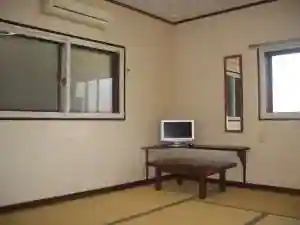
Ryokan Gongen So
Ryokan inn in Nishishin, Akashi with parking.
ホテルキャッスルプラザ
Hotel Kyassuru Plaza
Hotel in Matsunochi, Akashi; 4-minute walk from Nishiakashi Station.
【西明石リンカーンホテル】夕食・朝食無料サービスの宿◎
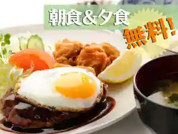
(Nishiakashi Rinkan Hotel) Yushoku Choshoku Muryo Sabisu No Yado
Hotel in Matsunochi, Akashi with breakfast available and a large communal bath.
スマイルホテル西明石
Sumairu Hotel Nishiakashi
西明石ホテル
Nishiakashi Hotel
Hotel in Wasaka, Akashi; 3-minute walk from Nishiakashi Station.
明石家旅館別館
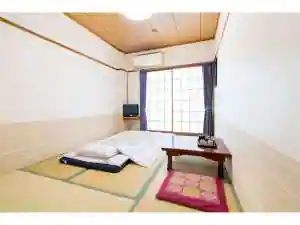
Akashiya Ryokan Bekkan
Ryokan inn in Matsunochi, Akashi with family-friendly stays.
明石ルミナスホテル
Akashi Ruminasu Hotel
Tabist ホテル ユーアン明石
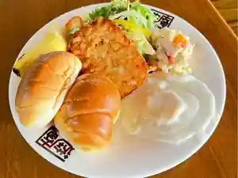
Tabist Hotel Yuan Akashi
Hotel in Futami, Akashi with parking.
Dining
菊水鮓 西店
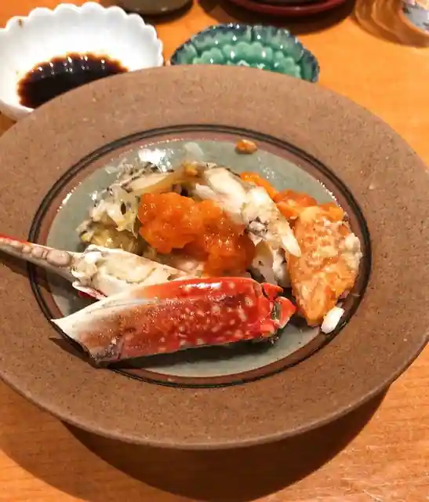
Kikusui Kurage Nishi
ピッツェリアベアトリーチェ
Pizzeria Beatoriche
ピコのおすし
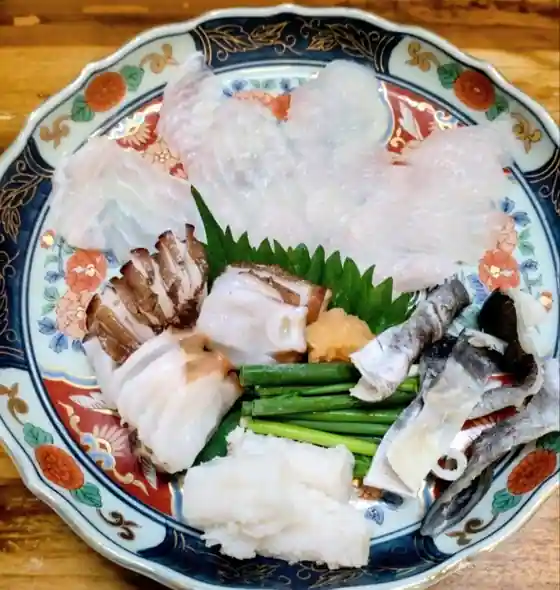
Piko Nosushi
ふなまち
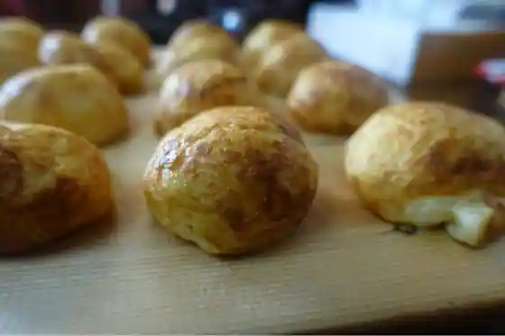
Funamachi
希凛 東店
Mare Rin Higashi
チーロ
Chiro
菊水 桜町本店
Kikusui Sakuramachi Hon
立ち呑み処 たなか屋
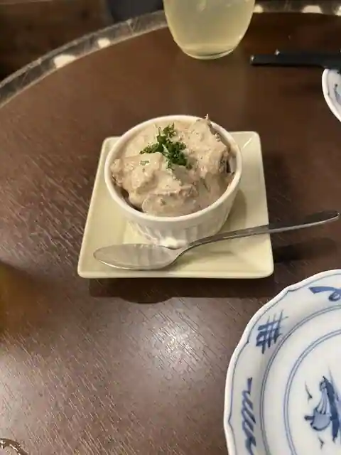
Tachi Nomi Tokoro Tanaka Ya
双樹
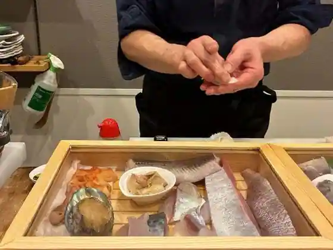
Soju
菊水鮓
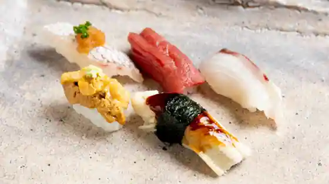
Kikusui Kurage
ピッツェリア ダ シュモーネ
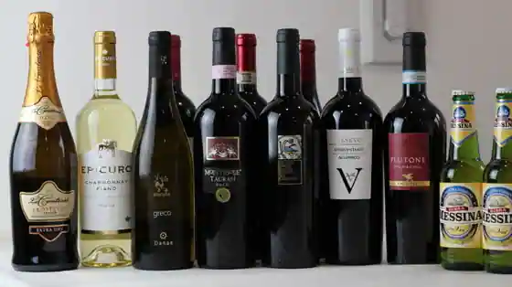
Pizzeria Da Shumone
黄金の穂
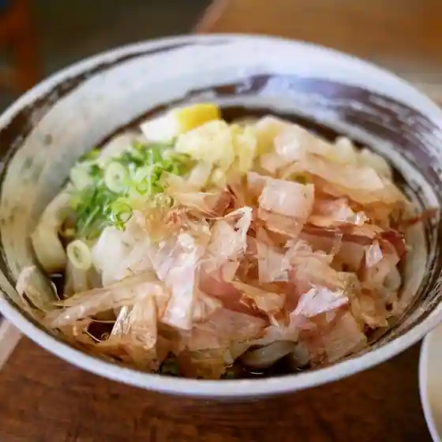
Ogon No Ho
希凛 西店
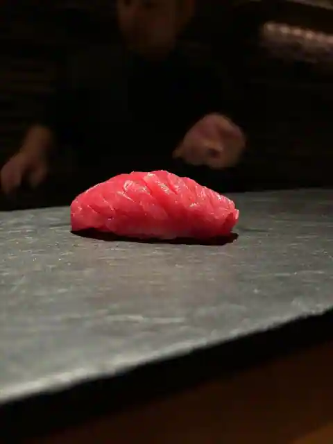
Mare Rin Nishi
浦正鮨 明石本店
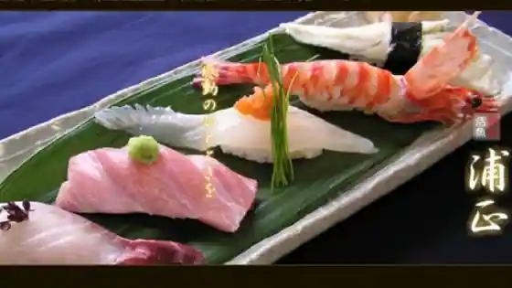
Ura Sei Sushi Akashi Hon
中華の高瀬
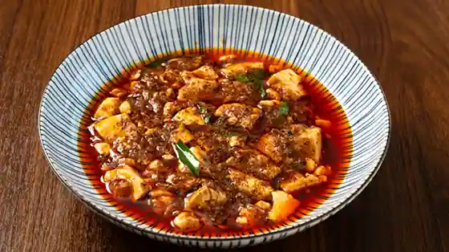
Chuka No Takase
あづまや
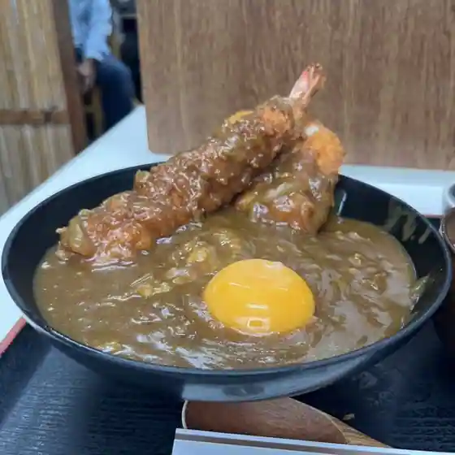
Azumaya
ふじきち
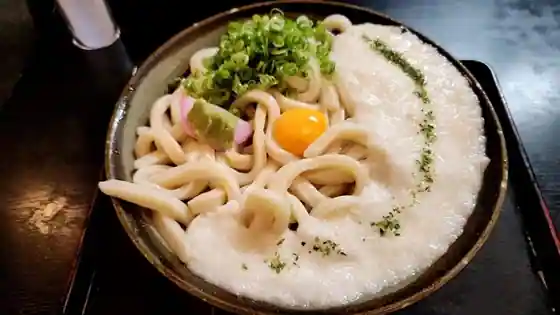
Fujikichi
てんしん
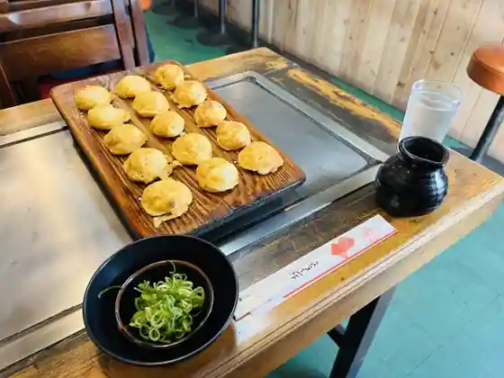
Tenshin
一
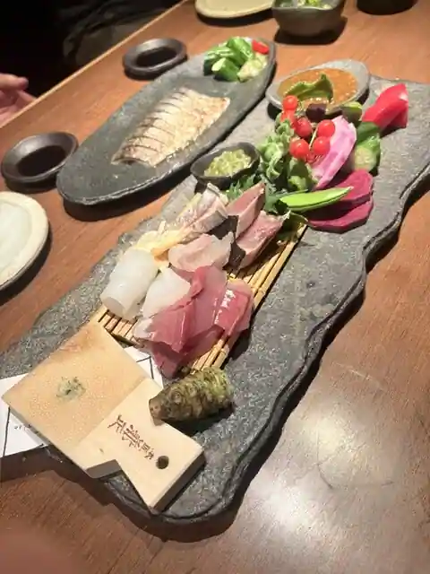
Ichi
明石旬楽よもぎ
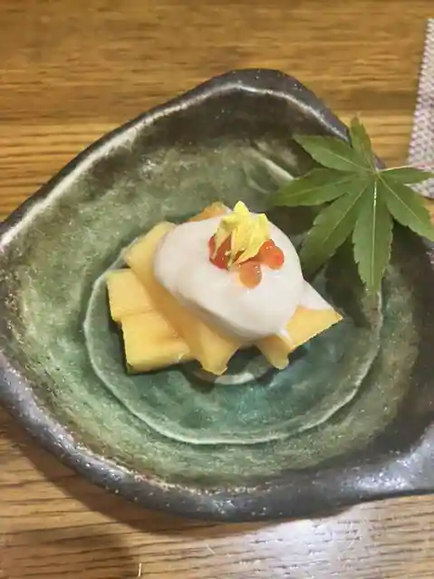
Akashi Jun Raku Yomogi
炭・鉄板焼 SAWA
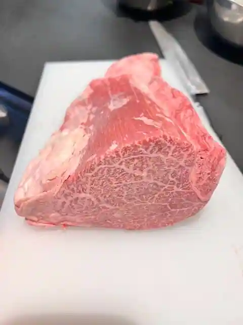
Sumi Teppanyaki SAWA
TABLE5
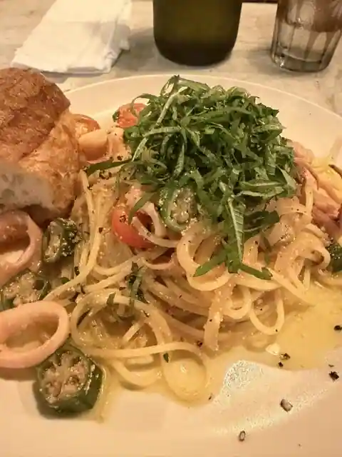
TABLE5
ななまる
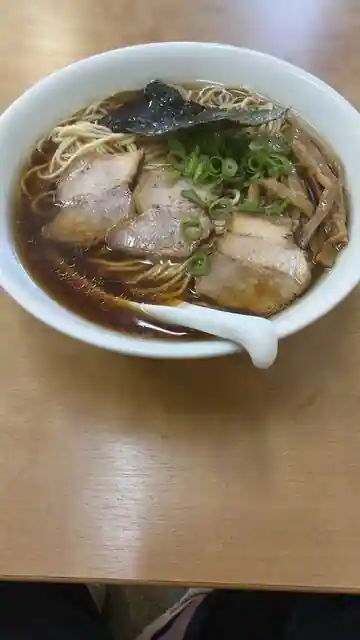
Nanamaru
立呑み処 呑べえ
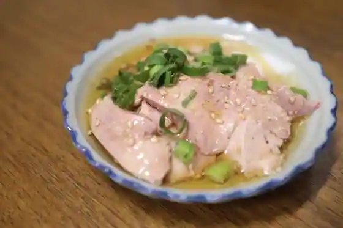
Ritsu Nomi Tokoro Don Be
Sights
Sakana no Tana Shopping Street